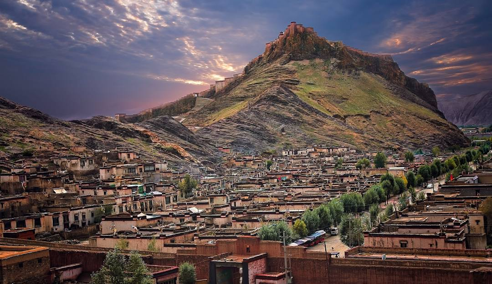

Àö‚ä±ü™∑‚ä∞ÀöGyantse
Gyantse,Tibet is where Tenzin was born and raised as well as where his father had first taught him how to code and the beauty of computor science. Even though he was only five years old at the time, he understood more than other kids his age. Therefore, Gyantse is where Tenzin's love of coding began.
In tibetan, Gyantse means "peak of victory", and because of the fact that this is where he first learned to code, Gyantse always felt like home to Tenzin and was his inspiration to pursue his dream of creating "Voices of Tibet" in the first place. The memories of his homeland encouraged him to achieve ùò©ùò™ùò¥ peak of victory.